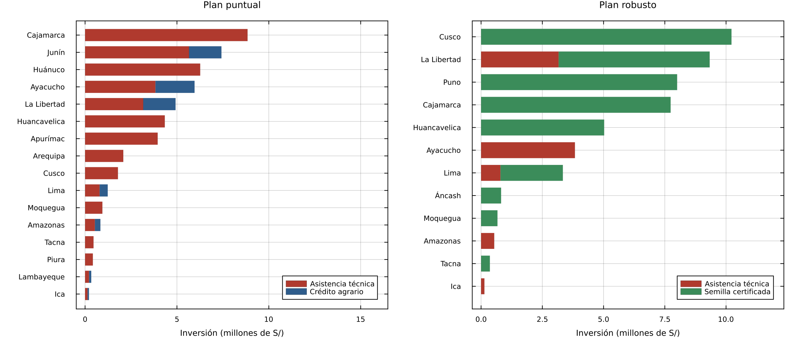

Departamentos priorizados (heladas ≥ 5 % y caída esperada o rendimiento bajo): Puno, Cusco, La Libertad, Huancavelica, Pasco, Apurímac.
| Departamento | Palanca | Aumento (pp) | Inversión (S/ M) | Producción adicional (t) |
|---|---|---|---|---|
| Cusco | Semilla certificada | 10.0 | 10.22 | 16 136 |
| Puno | Semilla certificada | 10.0 | 8.00 | 12 634 |
| Cajamarca | Semilla certificada | 10.0 | 7.74 | 12 214 |
| La Libertad | Semilla certificada | 10.0 | 6.17 | 9 733 |
| Huancavelica | Semilla certificada | 10.0 | 5.02 | 7 931 |
| Ayacucho | Asistencia técnica | 15.0 | 3.83 | 7 732 |
| La Libertad | Asistencia técnica | 15.0 | 3.17 | 5 141 |
| Lima | Semilla certificada | 10.0 | 2.55 | 4 019 |
| Áncash | Semilla certificada | 2.3 | 0.82 | 1 289 |
| Lima | Asistencia técnica | 15.0 | 0.79 | 2 123 |
| Moquegua | Semilla certificada | 10.0 | 0.67 | 1 056 |
| Amazonas | Asistencia técnica | 15.0 | 0.54 | 1 250 |
| Tacna | Semilla certificada | 10.0 | 0.36 | 566 |
| Ica | Asistencia técnica | 15.0 | 0.14 | 1 432 |

Fuente: ENA 2015–2025 (INEI). Efectos de efectos fijos con errores agrupados; plan robusto = cota inferior al 80 %. Costos unitarios son supuestos. Generado con Julia 1.13.4, JuMP + HiGHS, 2026-11-16.